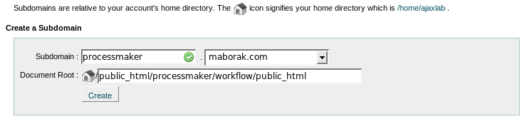
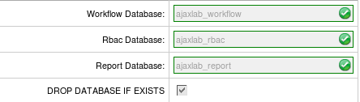
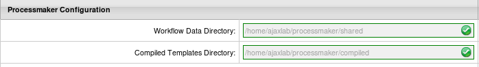

Overview
Before trying to install ProcessMaker on a hosted account, make sure that your hosting provider meets the requirements for ProcessMaker. The following instructions are valid from release 1.1-1705 on.
Warning: Many people have reported problems trying to install in a hosted account. To avoid problems, it is recommended to get a Virtual Private Server (VPS) which provides "root" or administrator access for doing a normal ProcessMaker installation. In any case, ProcessMaker generally consumes too much memory and processing cycles to run adequately on most hosted accounts. If looking for a cheap VPS for $5 per month or less, see http://www.lowendbox.com.
For installation in a VPS, do NOT follow these instructions!
Requirements
Server:
- Apache 2.2.3 or greater with the following modules enabled:
- deflate
- expires
- rewrite
- vhost_alias
- MySQL 4.1.20 or greater
(If using ProcessMaker 1.8 or later or the Pentaho Reports plugin, MySQL 5.1.6 or later is required.)
- PHP 5.1.6 or greater (but not PHP 5.3.X if using ProcessMaker 1.8 or earlier) with the following modules enabled:
- mysql
- xml
- mbstring
- mcrypt
- soap (necessary if using web services)
- ldap (necessary if integrating with LDAP or Active Directory)
- gd (recommended if using Events)
- curl (necessary for uploading/downloading files)
- In addition, install PHP's command line interface (CLI) if planning on using Events, the Case Scheduler, workspace backup/restore, or developing plugins with the Gulliver Framework.
Note: The installation in a hosted environment has not yet been tested in PHP 5.5.
Clients:
- Mozilla Firefox (recommended) or Internet Explorer 7 or greater
PHP Settings
ProcessMaker requires the following PHP modules:
- mysql, xml, mbstring
The following PHP modules are recommended, but ProcessMaker should be able to run without them:
- soap, gd, ldap, curl
If they aren't included, call your hosting provider and ask for them to be included in PHP.
Make sure that PHP has the following settings:
file_uploads = On
memory_limit = 80M
If these PHP settings are provided by your hosting provider, consult with your hosting provider to find out how to create a custom php.ini file in your hosted account:
If planning on uploading large Input Documents while running processes, the max_post_size and upload_max_filesize should be increased to more than the default 2MB. For instance, if planning on uploading files as large as 16MB, then:
upload_max_filesize = 16M
If using ProcessMaker 1-2.2552 or a previous version, enable ASP tags:
Apache will generally have to be restart or reloaded for new PHP settings to take effect. Ask your hosting provider how this can be done.
Installation
Download the latest ProcessMaker tarball from http://sourceforge.net/projects/processmaker/files
Then, extract the pmos-1.X-XXXX.tar.gz file under your /public_html/ directory (or where you store your publicly accessible web files). If you have access to a Linux/UNIX command line on your host, use the command:
If your hosting provider doesn't provide decompression utilities, you might have to decompress the files on your local computer (with a program like tar, 7-Zip or Winrar) and then upload them to your hosted account.
This will create a new processmaker directory containing all the ProcessMaker files and directories.
Set the following directories to be world readable and world writable:
/your_account/public_html/processmaker/workflow/engine/plugins/
/your_account/public_html/processmaker/workflow/engine/xlmform/
/your_account/public_html/processmaker/workflow/engine/content/languages/
/your_account/public_html/processmaker/workflow/engine/js/labels
If you have access a Linux/UNIX command line, use the commands:
chmod 777 config content/languages plugins xmlform js/labels
If you don't have access to the command line, make these changes with the file manager provided by your hosting provider.
Then, create the following directories to store shared files and compiled cache files needed by ProcessMaker and make them world readable and world writable:
/your_account/processmaker/shared
/your_account/processmaker/compiled
Make sure that these directories are not included in your public_html directory, so they won't be accessible to the internet. If you have access to a Linux/UNIX command line, use the commands:
chmod 775 processmaker
chmod 777 processmaker/shared processmaker/compiled
Configuring Apache
Because ProcessMaker uses a special redirect for the web pages, a .htaccess file, it has to be created in the public_html directory of the ProcessMaker installation.
Make sure that your hosting provider supports custom .htaccess files in any directory (not just the root directory):
Then create a .htaccess file in the public_html within the ProcessMaker installation:
This file should contain the following code:
Options FollowSymlinks
RewriteEngine on
RewriteRule ^.*/(.*)$ sysGeneric.php [NC,L]
ExpiresActive On
ExpiresDefault "access plus 1 day"
ExpiresByType image/gif "access plus 1 day"
ExpiresByType image/png "access plus 1 day"
ExpiresByType image/jpg "access plus 1 day"
ExpiresByType text/css "access plus 1 day"
ExpiresByType text/javascript "access plus 1 day"
AddOutputFilterByType DEFLATE text/html
Subdomain Creation
Create a new subdomain where ProcessMaker can be accessed from a web browser. The document root of this subdomain should be defined as:
As shown in the following illustration:

MySql Databases Setup
Create a MySql user to access the databases used by ProcessMaker.

Then, create the following three MySQL databases to be used by ProcessMaker:
1. wf_workflow to store information about processes, cases and user.
2. rb_workflow to implement Role Based Access Control for users.
3. rp_workflow to store data from Report Tables.
Then, add the pmuser to the three created databases, which in this example will be named "AJAXLAB":

Grant ALL privileges to the pmuser for the three databases:

ProcessMaker Configuration
Open your browser and go to the created ProcessMaker subdomain. You should see the Installation Configuration page. If you don't see it, please check the installation steps.
On the Installation Configuration page, enter your MySQL database account information, corresponding to the created pmuser.

Enter your MySQL ProcessMaker database, corresponding to the three created databases: wf_workflow, rb_workflow, rp_workflow

Enter the path to get to your Data Directory, which is the processmaker/shared directory you created. Also, enter the path to the Compiled Templates Directory which is the processmaker/compiled directory which you created.
Then, test your connection and paths, by clicking the on the tab "Test" option upper right-hand corner.


If the configuration is good, click on the Install button, in the upper right-hand corner to begin the installation of ProcessMaker.
After few seconds you will get the confirmation of your installation. If it was successful, click on the button "Finish installation" and enjoy ProccessMaker. Otherwise, please visit our forums (http://forum.processmaker.com/) to get support.
To login to ProcessMaker use the credentials for the ProcessMaker Administrator user, which were defined in the Configuration screen. By default they are:
Password: admin
Workspace: workflow
Important! The “admin” user will be able to access to all the features and functionality in your ProcessMaker installation, such as: system configuration, processes creation and editing, user and group management, case management, and report and dashboard oversight among others. Thus, it is strongly recommended you take care to configure a difficult-to-guess password for this account. Take a look at this list of password dos and don’ts. You may also consider using a strong password generator like this one.